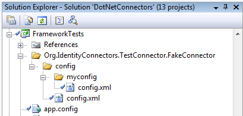
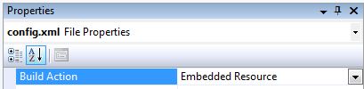

The document describes the basic build environment for developing .NET connectors.
Requirements:
Recommended:
Its easy enough to simply checkout the entire source code base from https://identityconnectors.dev.java.net/svn/identityconnectors/trunk/projects/dotnet. All .NET based connectors (such as the Active Directory Connector) as well as the .NET version of the Connector Framework live under this directory.
C:\build> svn checkout https://identityconnectors.dev.java.net/svn/identityconnectors/trunk/projects/dotnet dotnet
All .NET content is under the directory 'dotnet'. There is a top level solution which can be used by SharpDevelop and Visual Studio 2008 (VS will complain because some of the projects are Wix based and not part of the standard set of MS projects).
The .NET side of the project uses MSBuild exclusively because its compatible with the two most popular .NET development IDEs.
To build simply install all the required software above. If SharpDevelop is installed one should be able to just open the solution. If Visual Studio is install it should work with the solution as well only it will complain about a few projects. VS2008 will modify the solution and projects please *DO NOT* check them in unless you know exactly what your doing VS2008 tends to change it to whatever it wants with little regard to customization. The same can be said about SharpDevelop to some extent.
For a command line build one environment variable must be set. This is the location for Wix. The environment variable WIX_HOME must be set in order to build. You may need to add %WIX_HOME% to your PATH as well.
Hint: msbuild.exe is located in your .NET Framework directory. Most likely here: C:\WINDOWS\Microsoft.NET\Framework\v3.5
C:\build\identityconnectors\projects\dotnet>msbuild "DotNetConnectors.sln" Microsoft (R) Build Engine Version 3.5.21022.8 [Microsoft .NET Framework, Version 2.0.50727.1433] Copyright (C) Microsoft Corporation 2007. All rights reserved. Build started 5/14/2008 10:05:17 PM. Project "C:\build\identityconnectors\projects\dotnet\DotNetConnectors.sln" on nod e 0 (default targets). Building solution configuration "Debug|Any CPU". Project "C:\build\identityconnectors\projects\dotnet\Connector Gateway.sln" (1) is building "C:\build\identityconnectors\projects\dotnet\Common\Common.csproj" (2) o n node 0 (default targets). Skipping target "CoreCompile" because all output files are up-to-date with resp ect to the input files. CopyFilesToOutputDirectory: Common -> C:\build\identityconnectors\projects\dotnet\Common\bin\Debug\Common.dl l Done Building Project "C:\build\identityconnectors\projects\dotnet\Common\Common.c sproj" (default targets). Project "C:\build\identityconnectors\projects\dotnet\Connector Gateway.sln" (1) is building "C:\build\identityconnectors\projects\dotnet\ServiceInstall\ServiceInsta ll.wixproj" (3) on node 0 (default targets).
This will build everything and run all the Framework tests. The result is a full Remote Connector Framework Windows Service install. The default configuration is 'Debug'.
Connector bundles are simply .NET class libraries that follow some distinct patterns. Good examples are contained with in TestBundleV1 and TestBundleV2; these are skeletons to get you started. The only required references are the 'Common' and 'Framework' assemblies. These contain all the functionality necessary to create a .NET Connector.
Property files are configuration files containg name-value pairs of properties that can be used while running unit tests. The Connector Framework builds on its own configuration property loading mechanism when unit testing comes in question. Although, you can use any arbitrary logic to manage configuration properties of unit test, the framework has built-in support to read them via the TestHelpers class located in the TestCommon project.
Two main types of configuration property files are distinguished by the framework: public and private. The public configuration property file can be used to set properties which are generic for the whole connector, such as the default container in case of an LDAP based resource or the database name in case of a database resource. The private configuration property file is recommended to be used for storing sensitive data (such as user name, password, host name, etc.). Both, public and private general configuration files can be extended with any number of test setup specific property files. Let's take the Database Table Connector for example, it is a general purpose connector that can be used to manage data in any kind of database that has a JDBC driver, hence there must be a way to test it with all the supported databases. This is where a test setup specific configuration property file can come in handy. A public property file might be created to store the name of the database to use as it can be the same for all the database resources, however, specific private property files can be used to store the user name and password to a specific resource (MySQL, MS SQL, Oracle DB, etc.).
| Note: | The test setup specific property files are read if and only if the TEST_CONFIG environment variable is set, it must contain the name of the test setup to be used while running the unit tests. |
Public property files are loaded as embedded manifest resources, while private
property files are loaded as file system resources. The property files are
loaded in the
following order: public general file, public test setup specific file
if defined, private general
file and at last, private test specific file if defined. Properties that are
defined in a property file can be overridden in any of the following files in
the order, the last evaluated value will come into force, i.e. if, in the public general property file the property called
"Foo" is defined with the value 'bar' and the private
general property file defines it as well with the value "baz" and also a
test setup specific private property file defines it with the value 'qux', the
property bag created for the connector will contain the value 'qux' for
property 'Foo'.
Although, the directory layout of the path to the configuration property
files is similar to the one that you can observe on the Java side, note that the
configuration file loading mechanism is slightly different. The following
table shows how the path to a property file is built up according to its
type:
| General public property file | {fully qualified name of the connector}\config\config.xml |
| Test setup specific public property file | {fully qualified name of the connector}\config\%TEST_CONFIG%\config.xml |
| General private property file | %PRIVATE_CONFIG_ROOT%\config\{fully qualified name of the connector}\config-private\config.xml |
| Test setup specific private property file | %PRIVATE_CONFIG_ROOT%\config\{fully qualified name of the connector}\config-private\%TEST_CONFIG%\config.xml |
| Note: |
If the "PRIVATE_CONFIG_ROOT" environment variable is not defined, it will be replaced in the path with the
default root which points to a directory in the current user's profile container, the path of which is constructed as follows: %USERPROFILE%\.connectors\{assembly-name} The {assembly-name} is the name of the assembly that contains the connector type. For example: c:\Users\Administrator\.connectors\ActiveDirectory.Connector |
As the public configuration property files are embedded resources, they are intended to change rarely as any change to such property file requires the assembly to be recompiled. Use a private property file to override a property set in a public file instead.
To create a public general configuration property fileAdd a folder named as the FQN of the connector class to the project that will contain the configuration.
Although, it is recommended to add it to the test project, it can be any arbitrary project, but then the assembly created
from that project must be used while loading the properties. See TestHelpers.GetProperties(Type, Assembly)
for details.
Add a folder underneath the previously created one called config.
Add an XML file to this folder called config.xml.
Set the Build Action property of the config.xml to Embedded Resource.
Follow the steps 1. and 2. described in the previous section to create the root directory of the property files.
Add a folder underneath the previously created config folder called myconfig.
| Note: | myconfig is the name of the test setup that must be set for the TEST_CONFIG environment variable to make use of it. |
Add an XML file to this folder called config.xml.
Set the Build Action property of the config.xml to Embedded Resource.
|  |  |
| Note: | All the configuration property files must adhere to the following XML schema:
<?xml version="1.0" encoding="utf-8"?>
<xs:schema attributeFormDefault="unqualified" elementFormDefault="qualified" xmlns:xs="http://www.w3.org/2001/XMLSchema">
<xs:element name="config">
<xs:complexType>
<xs:sequence>
<xs:element maxOccurs="unbounded" name="property">
<xs:complexType>
<xs:attribute name="name" type="xs:string" use="required" />
<xs:attribute name="value" type="xs:string" use="required" />
</xs:complexType>
</xs:element>
</xs:sequence>
</xs:complexType>
</xs:element>
</xs:schema>
|
For an example config.xml file, take a look at the ActiveDirectoryConnectorTests project.